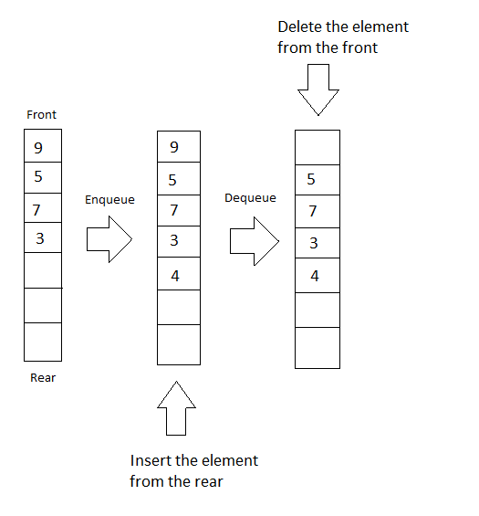
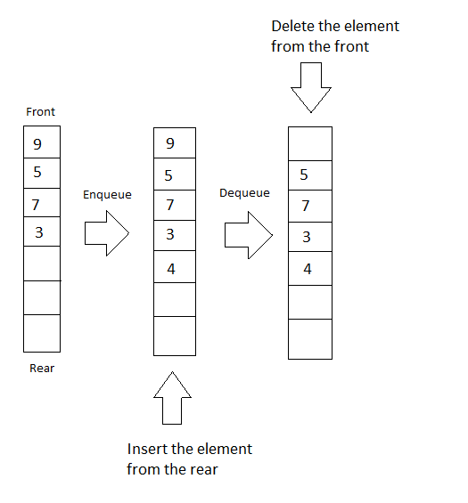

DFS e BFS
Frank Coelho de Alcantara -2020
Deep First Search - DFS
Passo 1: Escolha, visite, e insira os dados do vértice inicial na pilha.
Passo 2: Tire o vértice do topo da pilha e coloque na lista de visitados.
Passo 3: Encontre todos os nós adjacentes do nó marcado como visitado e coloque na pilha todos que não estejam na lista de visitados.
Passo 4: Repita os passos 2 e 3 até que a pilha esteja vazia.
Pior caso $O(|V|+|E|)$. Matriz adjacente é pior que lista de adjacentes.
DFS - Animação
DFS - Animação 2
Breadth First Search - BFS
Passo 1: Comece no vértice T e coloque este vértice na fila.
Passo 2: Repita os próximos passos para todos os vértices no grafo.
Passo 2.1: Tire o vértice de trabalho da lista e processe ele.
Passo 2.2: Coloque na fila todos os nós adjacentes de T e processe ele.
Passo 3: Quando não existirem vértices na lista encerre o laço.
Passo 4: Fim do algoritmo.
Pior caso $O(|V|+|E|)$. Matriz adjacente é pior que lista de adjacentes.
BFS - Animação
BFS - Animação 2
Pilhas e Listas
 
Referência: https://www.hackerearth.com/practice/notes/stacks-and-queues/

Referência: https://www.hackerearth.com/practice/notes/stacks-and-queues/
Exercício
Seu trabalho será fazer uma implementação do BFS e do DFS em C, C++, ou qualquer outra linguagem que desejar. Com as seguintes características.
- O Grafo gerado deverá ter 1.000.000 vértices.
- Estes vértices devem estar aleatoriamente conectados.
- O número de arestas em cada vértice deve variar entre 0 e 10 arestas de forma aleatória.
- No máximo 81,3% dos vértices terão arestas.
- Você não pode usar um gerador de números randômicos linear e congruente.
- Os vertices armazenarão a string "unicesumar".
- Apenas 1 vértice, escolhido aleatoriamente armazenará a string "ACHEI".
- O código deve ser comentado e não ter variáveis globais.
Os dois algoritmos correrão a mesma estrutura de dados 10 vezes seguidas, em cada vez você irá gerar uma estrutura nova, parando sempre que encontrar o vértice onde está a string "ACHEI". Você deverá:
- Em todas as 10 vezes você vai registrar, para os dois algoritmos, o vértice onde estava a string "ACHEI".
- Em todas as 10 vezes você vai registrar o tempo gasto para encontrar a string "ACHEI".
- Estes dados, além da média aritmética, e do desvio padrão dos tempos gastos para localizar a string "ACHEI" devem ser apresentados na tela.
PRÊMIO 2 PONTOS MÉDIA DO BIMESTRE
Condições:
- OS TRABALHOS SÃO INDIVIDUAIS.
- Trabalhos iguais serão anulados.
- Trabalhos copiados serão anulados.
- Trabalhos que usem um gerador de randômicos linear e congruente, serão anulados.
- Trabalhos que não tenham os dois algoritmos serão anulados.
- Os trabalhos devem rodar no Repl.it e este é o link que você deve compartilhar.
- Aqueles que fizerem em C++ e o programa cumprir todos os requisitos ganharão 3 pontos.
- A data limite para a entrega é 06 de novembro de 2020.
REFERÊNCIAS EM C
https://www.programiz.com/dsa/graph-dfs
https://www.programiz.com/dsa/graph-bfs
https://www.geeksforgeeks.org/depth-first-search-or-dfs-for-a-graph/
https://www.geeksforgeeks.org/breadth-first-search-or-bfs-for-a-graph/